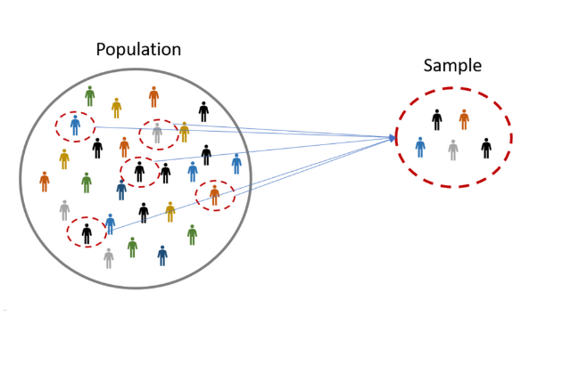

<!DOCTYPE html>
<html lang="en">
  <head>
    <meta charset="utf-8" />
    <meta name="viewport" content="width=device-width, initial-scale=1.0, maximum-scale=1.0, user-scalable=no" />

    <title></title>
    <link rel="stylesheet" href="dist/reveal.css" />
    <link rel="stylesheet" href="css/stefano.css" id="theme" />
    <link rel="stylesheet" href="plugin/highlight/zenburn.css" />
	<link rel="stylesheet" href="css/layout.css" />
	<link rel="stylesheet" href="plugin/customcontrols/style.css">

	<link rel="stylesheet" href="plugin/reveal-pointer/pointer.css" />


    <script defer src="dist/fontawesome/all.min.js"></script>

	<script type="text/javascript">
		var forgetPop = true;
		function onPopState(event) {
			if(forgetPop){
				forgetPop = false;
			} else {
				parent.postMessage(event.target.location.href, "app://obsidian.md");
			}
        }
		window.onpopstate = onPopState;
		window.onmessage = event => {
			if(event.data == "reload"){
				window.document.location.reload();
			}
			forgetPop = true;
		}

		function fitElements(){
			const itemsToFit = document.getElementsByClassName('fitText');
			for (const item in itemsToFit) {
				if (Object.hasOwnProperty.call(itemsToFit, item)) {
					var element = itemsToFit[item];
					fitElement(element,1, 1000);
					element.classList.remove('fitText');
				}
			}
		}

		function fitElement(element, start, end){

			let size = (end + start) / 2;
			element.style.fontSize = `${size}px`;

			if(Math.abs(start - end) < 1){
				while(element.scrollHeight > element.offsetHeight){
					size--;
					element.style.fontSize = `${size}px`;
				}
				return;
			}

			if(element.scrollHeight > element.offsetHeight){
				fitElement(element, start, size);
			} else {
				fitElement(element, size, end);
			}		
		}


		document.onreadystatechange = () => {
			fitElements();
			if (document.readyState === 'complete') {
				if (window.location.href.indexOf("?export") != -1){
					parent.postMessage(event.target.location.href, "app://obsidian.md");
				}
				if (window.location.href.indexOf("print-pdf") != -1){
					let stateCheck = setInterval(() => {
						clearInterval(stateCheck);
						window.print();
					}, 250);
				}
			}
	};


        </script>
  </head>
  <body>
    <div class="reveal">
      <div class="slides"><section ><section data-markdown><script type="text/template"><!-- .slide: class="drop" -->
<div class="" style="position: absolute; left: 0px; top: 0px; height: 700px; width: 960px; min-height: 700px; display: flex; flex-direction: column; align-items: center; justify-content: center" absolute="true">

# Choosing What to Observe
 
Stefano Pagliari

IP3017 - UG Dissertation Project
</div></script></section><section data-markdown><script type="text/template"><!-- .slide: class="drop" -->
<div class="" style="position: absolute; left: 0px; top: 0px; height: 700px; width: 960px; min-height: 700px; display: flex; flex-direction: column; align-items: center; justify-content: center" absolute="true">


</div></script></section><section data-markdown><script type="text/template"><!-- .slide: class="drop" -->
<div class="" style="position: absolute; left: 0px; top: 0px; height: 700px; width: 960px; min-height: 700px; display: flex; flex-direction: column; align-items: center; justify-content: center" absolute="true">

## Research Process  


</div></script></section><section data-markdown><script type="text/template"><!-- .slide: class="drop" -->
<div class="" style="position: absolute; left: 0px; top: 0px; height: 700px; width: 960px; min-height: 700px; display: flex; flex-direction: column; align-items: center; justify-content: center" absolute="true">

## Research Process

- &shy;<!-- .element: class="fragment" data-fragment-index="1" -->So far we have  
	- &shy;<!-- .element: class="fragment" data-fragment-index="2" -->Defined a research question  
	- &shy;<!-- .element: class="fragment" data-fragment-index="3" -->Identified hypothesis/es to investigate
	- &shy;<!-- .element: class="fragment" data-fragment-index="4" -->Picked a research design
- &shy;<!-- .element: class="fragment" data-fragment-index="5" -->Now we need to collect and analyze empirical evidence from specific cases.
- &shy;<!-- .element: class="fragment" data-fragment-index="6" -->E.g:  
	- &shy;<!-- .element: class="fragment" data-fragment-index="7" -->One civil war
	- &shy;<!-- .element: class="fragment" data-fragment-index="8" -->A handful of financial crises
	- &shy;<!-- .element: class="fragment" data-fragment-index="9" -->All members of the European Union 
	- &shy;<!-- .element: class="fragment" data-fragment-index="10" -->Thousands of votes in the British Parliament
- &shy;<!-- .element: class="fragment" data-fragment-index="11" -->**How do we select cases**?
</div></script></section><section data-markdown><script type="text/template"><!-- .slide: class="drop" -->
<div class="" style="position: absolute; left: 0px; top: 0px; height: 700px; width: 960px; min-height: 700px; display: flex; flex-direction: column; align-items: center; justify-content: center" absolute="true">

## Case Selection and Empirical Research Strategy


<div class="mermaid">

flowchart TD
A[Research Design]
B[Experimentation]
C[Observation]
D[Large N]
E[Small N <br> Case Study]
F[Single <br> Case Study]
G[Comparative <br> Case Studies]

A --> B
A --> C
C --> D
C --> E
E --> F
E --> G


</div>
</div></script></section><section data-markdown><script type="text/template"><!-- .slide: class="drop" -->
<div class="" style="position: absolute; left: 0px; top: 0px; height: 700px; width: 960px; min-height: 700px; display: flex; flex-direction: column; align-items: center; justify-content: center" absolute="true">

## Population

- &shy;<!-- .element: class="fragment" data-fragment-index="1" -->To test any hypothesis we must identify the universe of cases to which hypothesis should apply
- &shy;<!-- .element: class="fragment" data-fragment-index="2" -->Defining Population
	- &shy;<!-- .element: class="fragment" data-fragment-index="3" -->(Theoretical) Population: cases you want to generalize to
	- &shy;<!-- .element: class="fragment" data-fragment-index="4" -->(Study) Population: all possible cases relating to a particular topic which could be included in a study.
- &shy;<!-- .element: class="fragment" data-fragment-index="5" -->Studying the entire population  
	- &shy;<!-- .element: class="fragment" data-fragment-index="6" -->Best way to ensure that our findings apply broadly  
	- &shy;<!-- .element: class="fragment" data-fragment-index="7" -->Can be expensive, time consuming, difficult, to collect data on everyone/everything
	- &shy;<!-- .element: class="fragment" data-fragment-index="8" -->Also often don’t need data from whole population to make valid inferences
</div></script></section><section data-markdown><script type="text/template"><!-- .slide: class="drop" -->
<div class="" style="position: absolute; left: 0px; top: 0px; height: 700px; width: 960px; min-height: 700px; display: flex; flex-direction: column; align-items: center; justify-content: center" absolute="true">

## Sampling



</div></script></section><section data-markdown><script type="text/template"><!-- .slide: class="drop" -->
<div class="" style="position: absolute; left: 0px; top: 0px; height: 700px; width: 960px; min-height: 700px; display: flex; flex-direction: column; align-items: center; justify-content: center" absolute="true">

## Sampling

- &shy;<!-- .element: class="fragment" data-fragment-index="1" -->What is a sample?
	- &shy;<!-- .element: class="fragment" data-fragment-index="2" -->Any subset of units collected in some manner from a larger research population.
- &shy;<!-- .element: class="fragment" data-fragment-index="3" -->What is a sample for?
	- &shy;<!-- .element: class="fragment" data-fragment-index="4" -->To make inferences from the sample that can be applied to the population.
</div></script></section><section data-markdown><script type="text/template"><!-- .slide: class="drop" -->
<div class="" style="position: absolute; left: 0px; top: 0px; height: 700px; width: 960px; min-height: 700px; display: flex; flex-direction: column; align-items: center; justify-content: center" absolute="true">

## Why Sampling Matters?
- &shy;<!-- .element: class="fragment" data-fragment-index="1" -->Sampling as a strategy to draw inferences about the whole population
	- &shy;<!-- .element: class="fragment" data-fragment-index="2" -->E.g.: blood sample
- &shy;<!-- .element: class="fragment" data-fragment-index="3" -->Sampling and Generalization
	- &shy;<!-- .element: class="fragment" data-fragment-index="4" -->The sample **size** and the way a sample is selected matters for how conclusions derived from the sample can be applied to observations within a research population that were not formally studied
- &shy;<!-- .element: class="fragment" data-fragment-index="5" -->**Selection Bias:** it occurs when a sample does not adequately reflect a population.
	- &shy;<!-- .element: class="fragment" data-fragment-index="6" -->E.g. particular observations are systematically excluded or when particular observations are overrepresented in the sample.
</div></script></section><section data-markdown><script type="text/template"><!-- .slide: class="drop" -->
<div class="" style="position: absolute; left: 0px; top: 0px; height: 700px; width: 960px; min-height: 700px; display: flex; flex-direction: column; align-items: center; justify-content: center" absolute="true">

### 1936 Literary Digest Poll


- &shy;<!-- .element: class="fragment" data-fragment-index="1" -->Magazine sent surveys to 10 million Americans in order to predict US Presidential Elections
- &shy;<!-- .element: class="fragment" data-fragment-index="2" -->2 million people responded. Wrongly Predicted defeat of President Roosevelt
- &shy;<!-- .element: class="fragment" data-fragment-index="3" -->What went wrong?
	- &shy;<!-- .element: class="fragment" data-fragment-index="4" -->Literary Digest sampled from registered automobile owners, subscribers to the Literary Digest, and people with home phone number
	- &shy;<!-- .element: class="fragment" data-fragment-index="5" -->Wealthier and more conservative than the population at large
</div></script></section></section><section ><section data-markdown><script type="text/template"><!-- .slide: class="drop" -->
<div class="" style="position: absolute; left: 0px; top: 0px; height: 700px; width: 960px; min-height: 700px; display: flex; flex-direction: column; align-items: center; justify-content: center" absolute="true">

## Random (Probability) Samples

- &shy;<!-- .element: class="fragment" data-fragment-index="1" -->For researchers working with many cases, the most common tactic is to choose a random sample
- &shy;<!-- .element: class="fragment" data-fragment-index="2" -->Picking many cases indiscriminately will reduce the odds that any cases will be systematically excluded
</div></script></section><section data-markdown><script type="text/template"><!-- .slide: class="drop" -->
<div class="" style="position: absolute; left: 0px; top: 0px; height: 700px; width: 960px; min-height: 700px; display: flex; flex-direction: column; align-items: center; justify-content: center" absolute="true">

### Randomization
- &shy;<!-- .element: class="fragment" data-fragment-index="1" -->**Simple random sample:** each potential observation has an equal and independent chance of being included in the research study.
- &shy;<!-- .element: class="fragment" data-fragment-index="2" -->**Stratified Random Sample:** Frequently researchers want to be sure their sample includes certain elements that are relevant to their larger questions.
</div></script></section><section data-markdown><script type="text/template"><!-- .slide: class="drop" -->
<div class="" style="position: absolute; left: 0px; top: 0px; height: 700px; width: 960px; min-height: 700px; display: flex; flex-direction: column; align-items: center; justify-content: center" absolute="true">

### Margin of Error and Sample Size

- &shy;<!-- .element: class="fragment" data-fragment-index="1" -->Margin of error is the expected degree of error between the characteristics of the sample and the characteristics of the whole population
- &shy;<!-- .element: class="fragment" data-fragment-index="2" -->A larger sample allows us to reduce the margin of error
</div></script></section></section><section ><section data-markdown><script type="text/template"><!-- .slide: class="drop" -->
<div class="" style="position: absolute; left: 0px; top: 0px; height: 700px; width: 960px; min-height: 700px; display: flex; flex-direction: column; align-items: center; justify-content: center" absolute="true">

## Non-Random (non-Probability) Sampling
</div></script></section><section data-markdown><script type="text/template"><!-- .slide: class="drop" -->
<div class="" style="position: absolute; left: 0px; top: 0px; height: 700px; width: 960px; min-height: 700px; display: flex; flex-direction: column; align-items: center; justify-content: center" absolute="true">

### Types of non-probability sampling

- &shy;<!-- .element: class="fragment" data-fragment-index="1" -->**Quota sample:** Researcher chooses a sample based on variation on a particular characteristic within a population
- &shy;<!-- .element: class="fragment" data-fragment-index="2" -->**Convenience sample:** Collection of information from the cases to which the researcher happens to have access.
- &shy;<!-- .element: class="fragment" data-fragment-index="3" -->**Snowball sample:** Information gleaned from one of the sources gives the researcher an idea of what to study next.
- &shy;<!-- .element: class="fragment" data-fragment-index="4" -->**Purposive sample:** Researcher choses cases that s/he believes will provide the most helpful information
</div></script></section><section data-markdown><script type="text/template"><!-- .slide: class="drop" -->
<div class="" style="position: absolute; left: 0px; top: 0px; height: 700px; width: 960px; min-height: 700px; display: flex; flex-direction: column; align-items: center; justify-content: center" absolute="true">

### Strength and Weaknesses of non-random sampling:
- &shy;<!-- .element: class="fragment" data-fragment-index="1" --> Tends to be quicker/cheaper/easier than random sampling
- &shy;<!-- .element: class="fragment" data-fragment-index="2" -->More likely to contain sample bias (some elements in your sample are over-represented and some are under- represented compared to your population).
</div></script></section><section data-markdown><script type="text/template"><!-- .slide: class="drop" -->
<div class="" style="position: absolute; left: 0px; top: 0px; height: 700px; width: 960px; min-height: 700px; display: flex; flex-direction: column; align-items: center; justify-content: center" absolute="true">

### "Sampling" in Large-N vs. Small-N Research

- &shy;<!-- .element: class="fragment" data-fragment-index="1" -->Large-N
	- &shy;<!-- .element: class="fragment" data-fragment-index="2" -->Goal of case selection is to achieve a representative sample of the population of interest which is of sufficient size to enable robust inferences to be made
- &shy;<!-- .element: class="fragment" data-fragment-index="3" -->Small-N  
	- &shy;<!-- .element: class="fragment" data-fragment-index="4" -->Cases are chosen for the presence or absence of factors that a theory has indicated are important.
	- &shy;<!-- .element: class="fragment" data-fragment-index="5" -->The investigator’s goal is to expand and generalize theories (analytic generalization) and not to enumerate frequencies (statistical generalization)
- &shy;<!-- .element: class="fragment" data-fragment-index="6" -->Rather than choosing information sources randomly, qualitative researchers overwhelmingly utilize norandom sampling methods.
</div></script></section></section><section ><section data-markdown><script type="text/template"><!-- .slide: class="drop" -->
<div class="" style="position: absolute; left: 0px; top: 0px; height: 700px; width: 960px; min-height: 700px; display: flex; flex-direction: column; align-items: center; justify-content: center" absolute="true">

## Types of Case Study
</div></script></section><section data-markdown><script type="text/template"><!-- .slide: class="drop" -->
<div class="" style="position: absolute; left: 0px; top: 0px; height: 700px; width: 960px; min-height: 700px; display: flex; flex-direction: column; align-items: center; justify-content: center" absolute="true">

### Typical Case Study

- &shy;<!-- .element: class="fragment" data-fragment-index="1" -->Typical examples of some cross-case relationship
- &shy;<!-- .element: class="fragment" data-fragment-index="2" -->Researcher wants to find a typical case of some phenomenon so that s/he can better explore the causal mechanisms at work
- &shy;<!-- .element: class="fragment" data-fragment-index="3" -->The more cases are alike, the more readily one can generalise from a single typical case
</div></script></section><section data-markdown><script type="text/template"><!-- .slide: class="drop" -->
<div class="" style="position: absolute; left: 0px; top: 0px; height: 700px; width: 960px; min-height: 700px; display: flex; flex-direction: column; align-items: center; justify-content: center" absolute="true">

### Extreme or Case Study Case

- &shy;<!-- .element: class="fragment" data-fragment-index="1" -->**Deviant case:** cases that by reference to some general cross-case relationship/theory demonstrate a highly surprising value
-  **Extreme case:** Cases that exemplify extreme or unusual values of the DV or IV
- Can be used to probe for new explanations
</div></script></section><section data-markdown><script type="text/template"><!-- .slide: class="drop" -->
<div class="" style="position: absolute; left: 0px; top: 0px; height: 700px; width: 960px; min-height: 700px; display: flex; flex-direction: column; align-items: center; justify-content: center" absolute="true">

### Influential Case Study
- &shy;<!-- .element: class="fragment" data-fragment-index="1" -->The goal of this case study selection is to explore cases that may be influential vis-à-vis some larger cross case theory
- &shy;<!-- .element: class="fragment" data-fragment-index="2" -->E.g. 9/11 for students of terrorism
- &shy;<!-- .element: class="fragment" data-fragment-index="3" -->Often an influential case is not representative
</div></script></section><section data-markdown><script type="text/template"><!-- .slide: class="drop" -->
<div class="" style="position: absolute; left: 0px; top: 0px; height: 700px; width: 960px; min-height: 700px; display: flex; flex-direction: column; align-items: center; justify-content: center" absolute="true">

### Hard vs. Easy Case
- &shy;<!-- .element: class="fragment" data-fragment-index="1" -->**Hard case**
	- &shy;<!-- .element: class="fragment" data-fragment-index="2" -->Case unlikely to support a given hypotheses.
	- &shy;<!-- .element: class="fragment" data-fragment-index="3" -->If a hypothesis holds true in a hard case, then it ought to hold true in many other cases
	- &shy;<!-- .element: class="fragment" data-fragment-index="4" -->E.g. Allison (1971) tested the influence of bureaucracies over policies in the case of the Cuban missiles crisis
- &shy;<!-- .element: class="fragment" data-fragment-index="5" -->**Easy case**
	- &shy;<!-- .element: class="fragment" data-fragment-index="6" -->Case in which hypothesis is most likely to work.
	- &shy;<!-- .element: class="fragment" data-fragment-index="7" -->If it does not, then we feel confident that the hypothesis won’t apply to many other cases
</div></script></section><section data-markdown><script type="text/template"><!-- .slide: class="drop" -->
<div class="" style="position: absolute; left: 0px; top: 0px; height: 700px; width: 960px; min-height: 700px; display: flex; flex-direction: column; align-items: center; justify-content: center" absolute="true">

### Diverse Case Studies

- &shy;<!-- .element: class="fragment" data-fragment-index="1" -->Selection of multiple cases that exemplify diverse values of DV, IV, or the relationship between the main variables
- &shy;<!-- .element: class="fragment" data-fragment-index="2" -->E.g. Someone studying the impact of ethnic diversity on public goods provision might select two communities (one with high levels of diversity and the other with low levels)
- &shy;<!-- .element: class="fragment" data-fragment-index="3" -->We are not interested in comparing two or more cases that are exactly the same in every respect or completely different in every respect.
</div></script></section><section data-markdown><script type="text/template"><!-- .slide: class="drop" -->
<div class="" style="position: absolute; left: 0px; top: 0px; height: 700px; width: 960px; min-height: 700px; display: flex; flex-direction: column; align-items: center; justify-content: center" absolute="true">

### Most Similar Cases
- &shy;<!-- .element: class="fragment" data-fragment-index="1" -->Selecting countries that share many theoretically important characteristics but differ in one crucial respect (related to the hypothesis of interest)
- &shy;<!-- .element: class="fragment" data-fragment-index="2" -->Those attributes in common across the cases can be rejected as potential explanation for variation in the dependent variable.
</div></script></section><section data-markdown><script type="text/template"><!-- .slide: class="drop" -->
<div class="" style="position: absolute; left: 0px; top: 0px; height: 700px; width: 960px; min-height: 700px; display: flex; flex-direction: column; align-items: center; justify-content: center" absolute="true">

#### Example of Most Similar Cases

Example: why socialism never emerged as a major political force in the United States compared to Europe?

| Case          | Socialist Movements? | Industrialized | Urbanized | Common Language | Fixed Social Classes |
| ------------- | -------------------- | -------------- | --------- | --------------- | -------------------- |
| United States | No                   | Yes            | Yes       | Yes             | No                   |
| France        | Yes                  | Yes            | Yes       | Yes             | Yes                     |
<small class="caption">Source: Johnson et al 2016 </small>
</div></script></section><section data-markdown><script type="text/template"><!-- .slide: class="drop" -->
<div class="" style="position: absolute; left: 0px; top: 0px; height: 700px; width: 960px; min-height: 700px; display: flex; flex-direction: column; align-items: center; justify-content: center" absolute="true">

### Most Different Cases
- &shy;<!-- .element: class="fragment" data-fragment-index="1" -->Select cases that are different in most respects and only similar on the key independent variable of interest.
- &shy;<!-- .element: class="fragment" data-fragment-index="2" -->The variable that is similar across the cases can be identified as the explanation for the common dependent variable
</div></script></section><section data-markdown><script type="text/template"><!-- .slide: class="drop" -->
<div class="" style="position: absolute; left: 0px; top: 0px; height: 700px; width: 960px; min-height: 700px; display: flex; flex-direction: column; align-items: center; justify-content: center" absolute="true">

#### Example of Most Different Cases

- &shy;<!-- .element: class="fragment" data-fragment-index="1" -->Skockpol 1979: What explains revolutions? 
	- &shy;<!-- .element: class="fragment" data-fragment-index="2" -->France (1789), China (1911), Russia (1917)
	- &shy;<!-- .element: class="fragment" data-fragment-index="3" -->Very different conditions
	- &shy;<!-- .element: class="fragment" data-fragment-index="4" -->Common DV: similar social revolution
	- &shy;<!-- .element: class="fragment" data-fragment-index="5" -->Common IV : breakdown of the state and agrarian grievances against landlords
</div></script></section><section data-markdown><script type="text/template"><!-- .slide: class="drop" -->
<div class="" style="position: absolute; left: 0px; top: 0px; height: 700px; width: 960px; min-height: 700px; display: flex; flex-direction: column; align-items: center; justify-content: center" absolute="true">

### Selecting on the Dependent Variable
- &shy;<!-- .element: class="fragment" data-fragment-index="1" -->By choosing cases with similar values on the DV we could miss cases in which the DV had a much different value, yet the IV looks much the same.
- &shy;<!-- .element: class="fragment" data-fragment-index="2" -->What causes economic development? (Geddes)
	- &shy;<!-- .element: class="fragment" data-fragment-index="3" -->Many studies have focused on the same cases with strong economic growth (S. Korea, Taiwan, Singapore, and Brazil)
	- &shy;<!-- .element: class="fragment" data-fragment-index="4" -->These countries made it difficult for workers to organize à labour repression must have contributed to growth
	- &shy;<!-- .element: class="fragment" data-fragment-index="5" -->Once we look at countries with lower levels of economic growth, we see that these have as much labor repression
- &shy;<!-- .element: class="fragment" data-fragment-index="6" -->Process tracing helpful to avoid selection bias by showing the process which connects the cause and the outcome
</div></script></section></section><section  data-markdown><script type="text/template"><!-- .slide: class="drop" -->
<div class="" style="position: absolute; left: 0px; top: 0px; height: 700px; width: 960px; min-height: 700px; display: flex; flex-direction: column; align-items: center; justify-content: center" absolute="true">

## Conclusion

- &shy;<!-- .element: class="fragment" data-fragment-index="1" -->You must
	- &shy;<!-- .element: class="fragment" data-fragment-index="2" -->Define the population of cases you want to generalize to
	- &shy;<!-- .element: class="fragment" data-fragment-index="3" -->Provide a rationale for why you selected one specific case or set of cases from among all those in the larger population were chosen.
- &shy;<!-- .element: class="fragment" data-fragment-index="4" -->Case Selection and Research Design  
	- &shy;<!-- .element: class="fragment" data-fragment-index="5" -->large-N: emphasis on random sampling  
	- &shy;<!-- .element: class="fragment" data-fragment-index="6" -->small-N: emphasis on non-random sampling
- &shy;<!-- .element: class="fragment" data-fragment-index="7" -->Case Selection and Generalizations
	- &shy;<!-- .element: class="fragment" data-fragment-index="8" -->it is important that you understand how the properties of the selected cases relate to the rest of the population
	- &shy;<!-- .element: class="fragment" data-fragment-index="9" -->It will be difficult to generalize from one case or a few cases
</div></script></section></div>
    </div>

    <script src="dist/reveal.js"></script>

    <script src="plugin/markdown/markdown.js"></script>
    <script src="plugin/highlight/highlight.js"></script>
    <script src="plugin/zoom/zoom.js"></script>
    <script src="plugin/notes/notes.js"></script>
    <script src="plugin/math/math.js"></script>
	<script src="plugin/mermaid/mermaid.js"></script>
	<script src="plugin/chart/chart.min.js"></script>
	<script src="plugin/chart/plugin.js"></script>
	<script src="plugin/menu/menu.js"></script>
	<script src="plugin/customcontrols/plugin.js"></script>
	<script src="plugin/reveal-pointer/pointer.js"></script>

    <script>
      function extend() {
        var target = {};
        for (var i = 0; i < arguments.length; i++) {
          var source = arguments[i];
          for (var key in source) {
            if (source.hasOwnProperty(key)) {
              target[key] = source[key];
            }
          }
        }
        return target;
      }

	  function isLight(color) {
		let hex = color.replace('#', '');

		// convert #fff => #ffffff
		if(hex.length == 3){
			hex = `${hex[0]}${hex[0]}${hex[1]}${hex[1]}${hex[2]}${hex[2]}`;
		}

		const c_r = parseInt(hex.substr(0, 2), 16);
		const c_g = parseInt(hex.substr(2, 2), 16);
		const c_b = parseInt(hex.substr(4, 2), 16);
		const brightness = ((c_r * 299) + (c_g * 587) + (c_b * 114)) / 1000;
		return brightness > 155;
	}

	var bgColor = getComputedStyle(document.documentElement).getPropertyValue('--r-background-color').trim();
	var isLight = isLight(bgColor);

	if(isLight){
		document.body.classList.add('has-light-background');
	} else {
		document.body.classList.add('has-dark-background');
	}

      // default options to init reveal.js
      var defaultOptions = {
        controls: true,
        progress: true,
        history: true,
        center: true,
        transition: 'default', // none/fade/slide/convex/concave/zoom
        plugins: [
          RevealMarkdown,
          RevealHighlight,
          RevealZoom,
          RevealNotes,
          RevealMath.MathJax3,
		  RevealMermaid,
		  RevealChart,
		  RevealCustomControls,
		  RevealMenu,
	      RevealPointer,
        ],


    	allottedTime: 120 * 1000,

		mathjax3: {
			mathjax: 'plugin/math/mathjax/tex-mml-chtml.js',
		},
		markdown: {
		  gfm: true,
		  mangle: true,
		  pedantic: false,
		  smartLists: false,
		  smartypants: false,
		},

		mermaid: {
			theme: isLight ? 'default' : 'dark',
		},

		customcontrols: {
			controls: [
				{id: 'toggle-overview',
				title: 'Toggle overview (O)',
				icon: '<i class="fa fa-th"></i>',
				action: 'Reveal.toggleOverview();'
				},
			]
		},
		menu: {
			loadIcons: false
		}
      };

      // options from URL query string
      var queryOptions = Reveal().getQueryHash() || {};

      var options = extend(defaultOptions, {"width":960,"height":700,"margin":0.04,"controls":true,"progress":true,"slideNumber":true,"transition":"fade","transitionSpeed":"slow"}, queryOptions);
    </script>

    <script>
      Reveal.initialize(options);
    </script>
  </body>

  <!-- created with Advanced Slides -->
</html>
